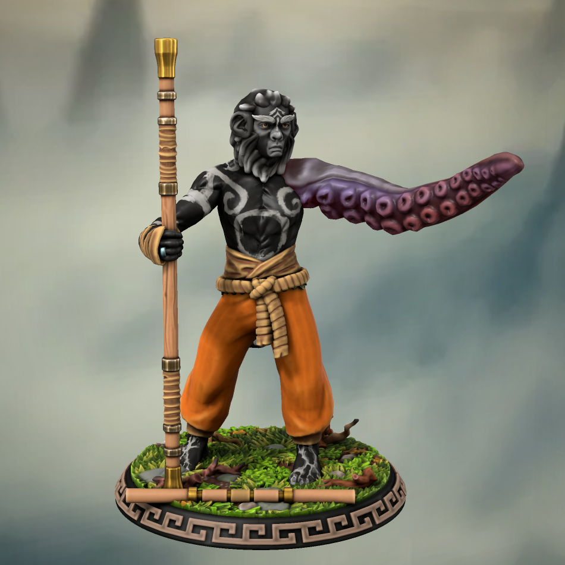
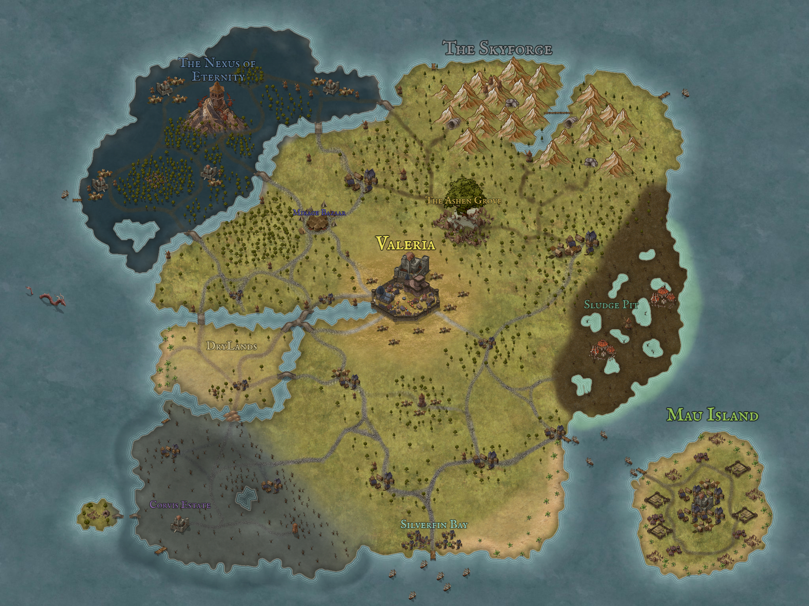

Dungeons & Dragons is my favorite activity to do with friends. Besides playing, I also love creating custom content for the game. I got into D&D when some friends invited me to join a campaign they were planning. After just one session, I was completely hooked. Since then, I’ve been constantly talking about it and developing my own content. Creating homebrew material is a great way to express my creativity beyond video games.
The Campaigns
Vero Campaign
Character Sheet I played as Vero for about a year in a 10-session campaign with three other players and the GM. As my first character, Vero was relatively simple, but he holds a special place in my heart since he introduced me to D&D. He was a Way of Mercy Monk with a tragic backstory centered around loss and grief. Unfortunately, this campaign ended after session nine.
Pak'cha Campaign
Character Sheet I am currently playing as Pak'cha, the queen’s guard of her mother, the Thri-Kreen Queen. I play alongside a friend who takes on the role of the queen. This campaign has had about four sessions so far, with four other players and the same GM from my previous campaign. Pak'cha is a Paladin with a homebrew subclass: Oath of the Cosmic Vanguard. Her playstyle has been far more enjoyable than Vero’s, though her personality doesn’t reflect me as much.

Castodia
Castodia is the world I created for my own D&D campaign. It features extensive homebrew content, heavily inspired by the show *Supernatural*. For this world, I designed a unique pantheon of gods, a new class called the Hunter with four subclasses, a custom curse inspired by lycanthropy, and original creatures that players can battle or befriend. Castodia is an island filled with diverse regions for my four players to explore. I am continuously expanding this project, adding new content as long as the campaign continues.
